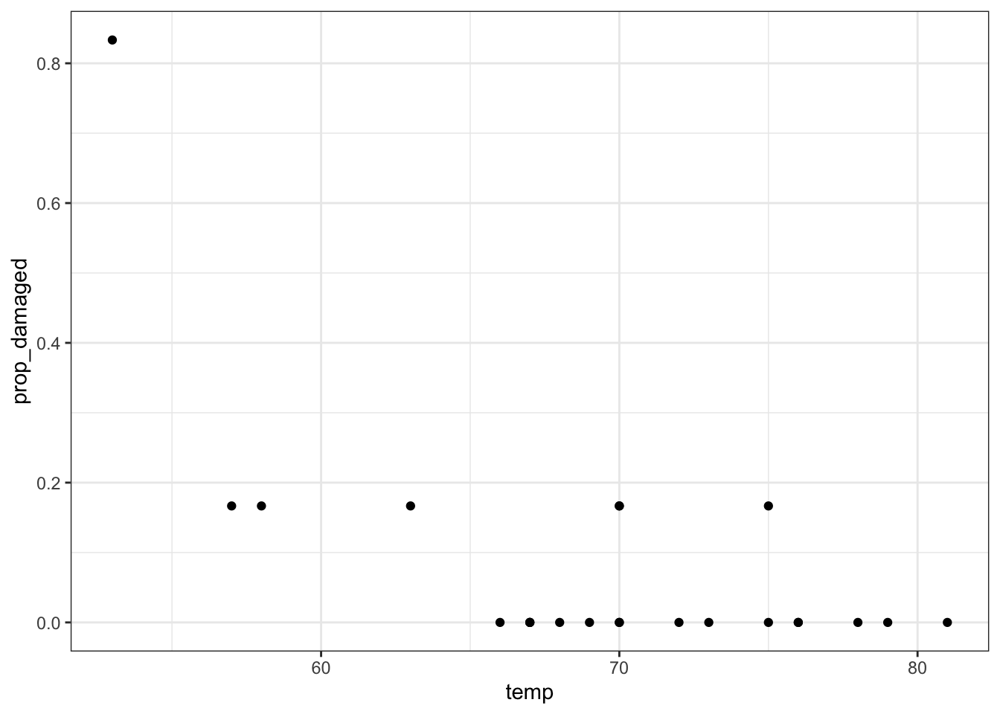
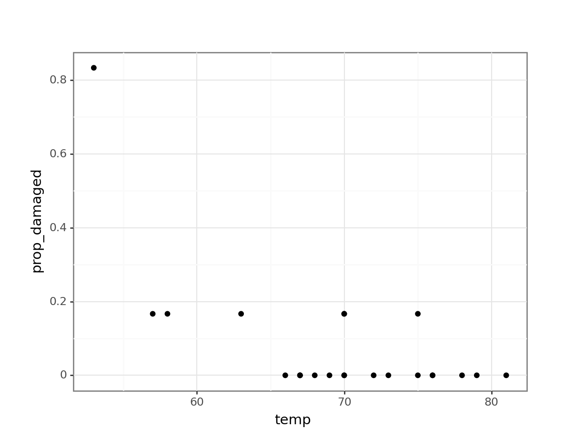
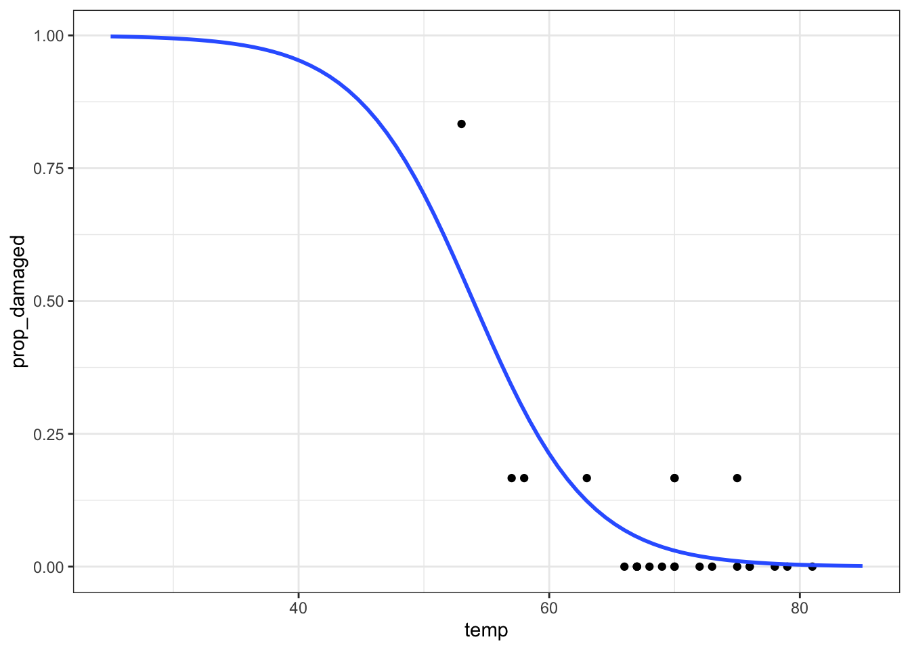
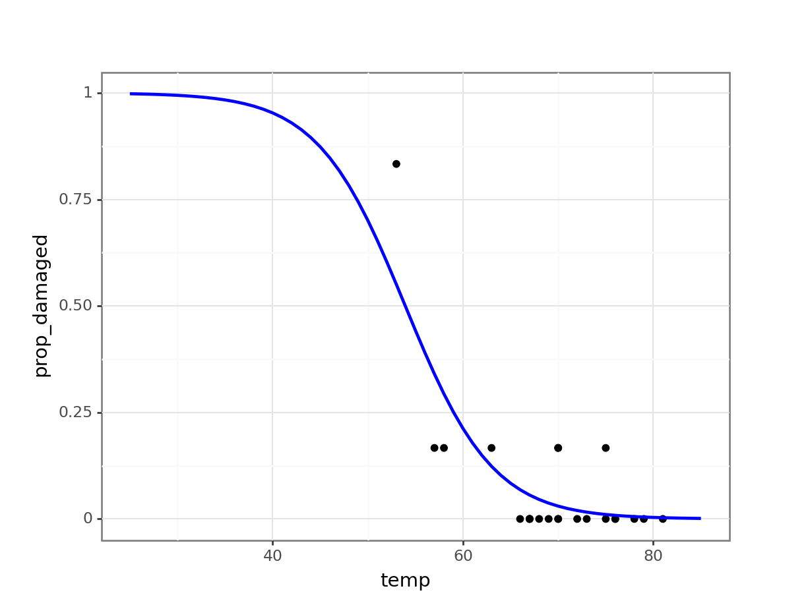
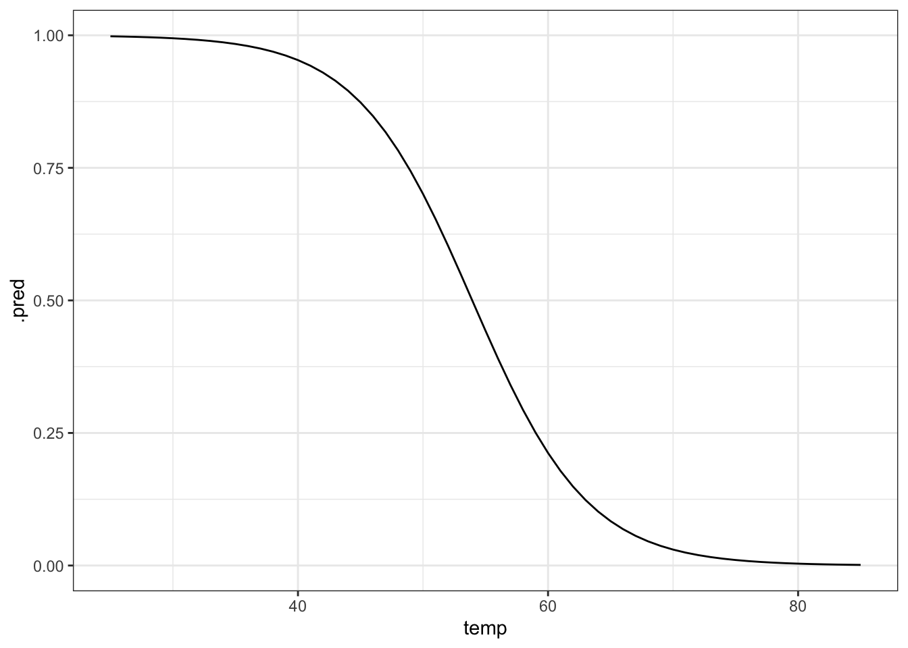
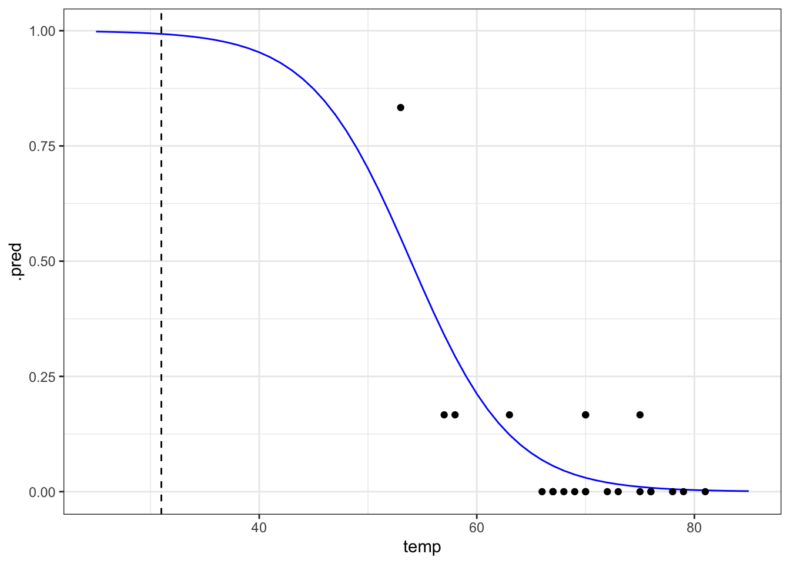
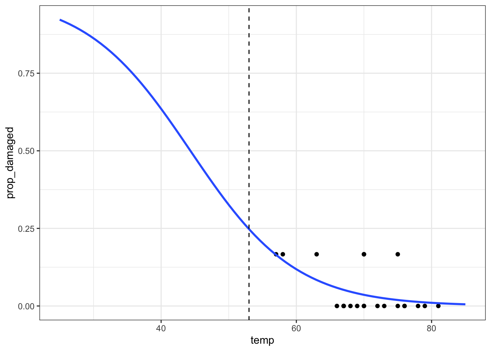
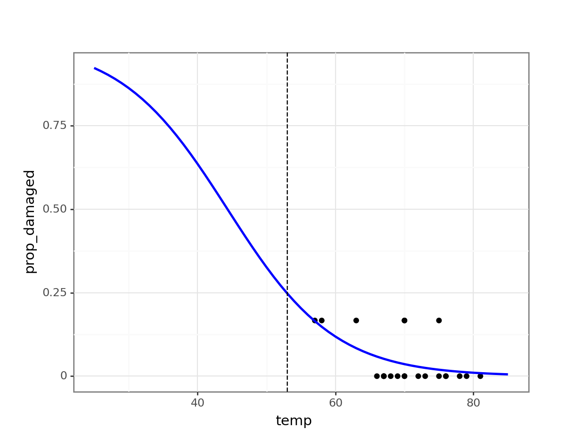

library(broom)
library(tidyverse)
library(ggResidpanel)8 Proportional response
Learning outcomes
- How do I analyse proportion responses?
- Be able to create a logistic model to test proportion response variables
- Be able to plot the data and fitted curve
- Assess the significance of the fit
8.1 Libraries and functions
Click to expand
8.1.1 Libraries
8.1.2 Functions
# create diagnostic plots
ggResidpanel::resid_panel()8.1.3 Libraries
# A maths library
import math
# A Python data analysis and manipulation tool
import pandas as pd
# Python equivalent of `ggplot2`
from plotnine import *
# Statistical models, conducting tests and statistical data exploration
import statsmodels.api as sm
# Convenience interface for specifying models using formula strings and DataFrames
import statsmodels.formula.api as smf
# Needed for additional probability functionality
from scipy.stats import *8.1.4 Functions
The example in this section uses the following data set:
data/challenger.csv
These data, obtained from the faraway package in R, contain information related to the explosion of the USA Space Shuttle Challenger on 28 January, 1986. An investigation after the disaster traced back to certain joints on one of the two solid booster rockets, each containing O-rings that ensured no exhaust gases could escape from the booster.
The night before the launch was unusually cold, with temperatures below freezing. The final report suggested that the cold snap during the night made the o-rings stiff, and unable to adjust to changes in pressure. As a result, exhaust gases leaked away from the solid booster rockets, causing one of them to break loose and rupture the main fuel tank, leading to the final explosion.
The question we’re trying to answer in this session is: based on the data from the previous flights, would it have been possible to predict the failure of most o-rings on the Challenger flight?
8.2 Load and visualise the data
First we load the data, then we visualise it.
challenger <- read_csv("data/challenger.csv")Rows: 23 Columns: 2
── Column specification ────────────────────────────────────────────────────────
Delimiter: ","
dbl (2): temp, damage
ℹ Use `spec()` to retrieve the full column specification for this data.
ℹ Specify the column types or set `show_col_types = FALSE` to quiet this message.challenger_py = pd.read_csv("data/challenger.csv")The data set contains several columns:
temp, the launch temperature in degrees Fahrenheitdamage, the number of o-rings that showed erosion
Before we have a further look at the data, let’s calculate the proportion of damaged o-rings (prop_damaged) and the total number of o-rings (total) and update our data set.
challenger <-
challenger %>%
mutate(total = 6, # total number of o-rings
intact = 6 - damage, # number of undamaged o-rings
prop_damaged = damage / total) # proportion damaged o-rings
challenger# A tibble: 23 × 5
temp damage total intact prop_damaged
<dbl> <dbl> <dbl> <dbl> <dbl>
1 53 5 6 1 0.833
2 57 1 6 5 0.167
3 58 1 6 5 0.167
4 63 1 6 5 0.167
5 66 0 6 6 0
6 67 0 6 6 0
7 67 0 6 6 0
8 67 0 6 6 0
9 68 0 6 6 0
10 69 0 6 6 0
# ℹ 13 more rowschallenger_py['total'] = 6
challenger_py['intact'] = challenger_py['total'] - challenger_py['damage']
challenger_py['prop_damaged'] = challenger_py['damage'] / challenger_py['total']Plotting the proportion of damaged o-rings against the launch temperature shows the following picture:
ggplot(challenger, aes(x = temp, y = prop_damaged)) +
geom_point()
(ggplot(challenger_py,
aes(x = "temp",
y = "prop_damaged")) +
geom_point())
The point on the left is the data point corresponding to the coldest flight experienced before the disaster, where five damaged o-rings were found. Fortunately, this did not result in a disaster.
Here we’ll explore if we could have reasonably predicted the failure of both o-rings on the Challenger flight, where the launch temperature was 31 degrees Fahrenheit.
8.3 Creating a suitable model
We only have 23 data points in total. So we’re building a model on not that much data - we should keep this in mind when we draw our conclusions!
We are using a logistic regression for a proportion response in this case, since we’re interested in the proportion of o-rings that are damaged.
We can define this as follows:
glm_chl <- glm(cbind(damage, intact) ~ temp,
family = binomial,
data = challenger)Defining the relationship for proportion responses is a bit annoying, where you have to give the glm model a two-column matrix to specify the response variable.
Here, the first column corresponds to the number of damaged o-rings, whereas the second column refers to the number of intact o-rings. We use the cbind() function to bind these two together into a matrix.
# create a generalised linear model
model = smf.glm(formula = "damage + intact ~ temp",
family = sm.families.Binomial(),
data = challenger_py)
# and get the fitted parameters of the model
glm_chl_py = model.fit()If we’re using the original observations, we need to supply both the number of damaged o-rings and the number of intact ones.
Remember, in a proportional response we’re looking for the number of “successes” in a given number of trials. Here, the function determines the number of “successes” (damaged) out of the number of trials (damaged + intact) for each observation (the 23 shuttle missions).
8.4 Model output
That’s the easy part done! The trickier part is interpreting the output. First of all, we’ll get some summary information.
Next, we can have a closer look at the results:
summary(glm_chl)
Call:
glm(formula = cbind(damage, intact) ~ temp, family = binomial,
data = challenger)
Coefficients:
Estimate Std. Error z value Pr(>|z|)
(Intercept) 11.66299 3.29626 3.538 0.000403 ***
temp -0.21623 0.05318 -4.066 4.78e-05 ***
---
Signif. codes: 0 '***' 0.001 '**' 0.01 '*' 0.05 '.' 0.1 ' ' 1
(Dispersion parameter for binomial family taken to be 1)
Null deviance: 38.898 on 22 degrees of freedom
Residual deviance: 16.912 on 21 degrees of freedom
AIC: 33.675
Number of Fisher Scoring iterations: 6We can see that the p-values of the intercept and temp are significant. We can also use the intercept and temp coefficients to construct the logistic equation, which we can use to sketch the logistic curve.
print(glm_chl_py.summary()) Generalized Linear Model Regression Results
================================================================================
Dep. Variable: ['damage', 'intact'] No. Observations: 23
Model: GLM Df Residuals: 21
Model Family: Binomial Df Model: 1
Link Function: Logit Scale: 1.0000
Method: IRLS Log-Likelihood: -14.837
Date: Fri, 14 Jun 2024 Deviance: 16.912
Time: 13:04:59 Pearson chi2: 28.1
No. Iterations: 7 Pseudo R-squ. (CS): 0.6155
Covariance Type: nonrobust
==============================================================================
coef std err z P>|z| [0.025 0.975]
------------------------------------------------------------------------------
Intercept 11.6630 3.296 3.538 0.000 5.202 18.124
temp -0.2162 0.053 -4.066 0.000 -0.320 -0.112
==============================================================================\[E(prop \ failed\ orings) = \frac{\exp{(11.66 - 0.22 \times temp)}}{1 + \exp{(11.66 - 0.22 \times temp)}}\]
Let’s see how well our model would have performed if we would have fed it the data from the ill-fated Challenger launch.
ggplot(challenger, aes(temp, prop_damaged)) +
geom_point() +
geom_smooth(method = "glm", se = FALSE, fullrange = TRUE,
method.args = list(family = binomial)) +
xlim(25,85)Warning in eval(family$initialize): non-integer #successes in a binomial glm!
We can get the predicted values for the model as follows:
challenger_py['predicted_values'] = glm_chl_py.predict()
challenger_py.head() temp damage total intact prop_damaged predicted_values
0 53 5 6 1 0.833333 0.550479
1 57 1 6 5 0.166667 0.340217
2 58 1 6 5 0.166667 0.293476
3 63 1 6 5 0.166667 0.123496
4 66 0 6 6 0.000000 0.068598This would only give us the predicted values for the data we already have. Instead we want to extrapolate to what would have been predicted for a wider range of temperatures. Here, we use a range of \([25, 85]\) degrees Fahrenheit.
model = pd.DataFrame({'temp': list(range(25, 86))})
model["pred"] = glm_chl_py.predict(model)
model.head() temp pred
0 25 0.998087
1 26 0.997626
2 27 0.997055
3 28 0.996347
4 29 0.995469(ggplot(challenger_py,
aes(x = "temp",
y = "prop_damaged")) +
geom_point() +
geom_line(model, aes(x = "temp", y = "pred"), colour = "blue", size = 1))
Generating predicted values
Another way of doing this it to generate a table with data for a range of temperatures, from 25 to 85 degrees Fahrenheit, in steps of 1. We can then use these data to generate the logistic curve, based on the fitted model.
# create a table with sequential numbers ranging from 25 to 85
model <- tibble(temp = seq(25, 85, by = 1)) %>%
# add a new column containing the predicted values
mutate(.pred = predict(glm_chl, newdata = ., type = "response"))
ggplot(model, aes(temp, .pred)) +
geom_line()
# plot the curve and the original data
ggplot(model, aes(temp, .pred)) +
geom_line(colour = "blue") +
geom_point(data = challenger, aes(temp, prop_damaged)) +
# add a vertical line at the disaster launch temperature
geom_vline(xintercept = 31, linetype = "dashed")
It seems that there was a high probability of both o-rings failing at that launch temperature. One thing that the graph shows is that there is a lot of uncertainty involved in this model. We can tell, because the fit of the line is very poor at the lower temperature range. There is just very little data to work on, with the data point at 53 F having a large influence on the fit.
We already did this above, since this is the most straightforward way of plotting the model in Python.
8.5 Exercises
8.5.1 Predicting failure
Exercise
Level:
The data point at 53 degrees Fahrenheit is quite influential for the analysis. Remove this data point and repeat the analysis. Is there still a predicted link between launch temperature and o-ring failure?
Answer
First, we need to remove the influential data point:
challenger_new <- challenger %>% filter(temp != 53)We can create a new generalised linear model, based on these data:
glm_chl_new <- glm(cbind(damage, intact) ~ temp,
family = binomial,
data = challenger_new)We can get the model parameters as follows:
summary(glm_chl_new)
Call:
glm(formula = cbind(damage, intact) ~ temp, family = binomial,
data = challenger_new)
Coefficients:
Estimate Std. Error z value Pr(>|z|)
(Intercept) 5.68223 4.43138 1.282 0.1997
temp -0.12817 0.06697 -1.914 0.0556 .
---
Signif. codes: 0 '***' 0.001 '**' 0.01 '*' 0.05 '.' 0.1 ' ' 1
(Dispersion parameter for binomial family taken to be 1)
Null deviance: 16.375 on 21 degrees of freedom
Residual deviance: 12.633 on 20 degrees of freedom
AIC: 27.572
Number of Fisher Scoring iterations: 5ggplot(challenger_new, aes(temp, prop_damaged)) +
geom_point() +
geom_smooth(method = "glm", se = FALSE, fullrange = TRUE,
method.args = list(family = binomial)) +
xlim(25,85) +
# add a vertical line at 53 F temperature
geom_vline(xintercept = 53, linetype = "dashed")Warning in eval(family$initialize): non-integer #successes in a binomial glm!
The prediction proportion of damaged o-rings is markedly less than what was observed.
Before we can make any firm conclusions, though, we need to check our model:
1- pchisq(12.633, 20)[1] 0.8925695We get quite a high score (around 0.9) for this, which tells us that our goodness of fit is pretty good. This is because the probability is giving us a measure for, roughly, “the probability that this model is good”.
More detail on this in the goodness-of-fit section.
The next question we can ask is: Is our model any better than the null model?
1 - pchisq(16.375 - 12.633, 21 - 20)[1] 0.0530609However, the model is not significantly better than the null in this case, with a p-value here of just over 0.05.
First, we need to remove the influential data point:
challenger_new_py = challenger_py.query("temp != 53")We can create a new generalised linear model, based on these data:
# create a generalised linear model
model = smf.glm(formula = "damage + intact ~ temp",
family = sm.families.Binomial(),
data = challenger_new_py)
# and get the fitted parameters of the model
glm_chl_new_py = model.fit()We can get the model parameters as follows:
print(glm_chl_new_py.summary()) Generalized Linear Model Regression Results
================================================================================
Dep. Variable: ['damage', 'intact'] No. Observations: 22
Model: GLM Df Residuals: 20
Model Family: Binomial Df Model: 1
Link Function: Logit Scale: 1.0000
Method: IRLS Log-Likelihood: -11.786
Date: Fri, 14 Jun 2024 Deviance: 12.633
Time: 13:05:00 Pearson chi2: 16.6
No. Iterations: 6 Pseudo R-squ. (CS): 0.1564
Covariance Type: nonrobust
==============================================================================
coef std err z P>|z| [0.025 0.975]
------------------------------------------------------------------------------
Intercept 5.6822 4.431 1.282 0.200 -3.003 14.368
temp -0.1282 0.067 -1.914 0.056 -0.259 0.003
==============================================================================Generate new model data:
model = pd.DataFrame({'temp': list(range(25, 86))})
model["pred"] = glm_chl_new_py.predict(model)
model.head() temp pred
0 25 0.922585
1 26 0.912920
2 27 0.902177
3 28 0.890269
4 29 0.877107(ggplot(challenger_new_py,
aes(x = "temp",
y = "prop_damaged")) +
geom_point() +
geom_line(model, aes(x = "temp", y = "pred"), colour = "blue", size = 1) +
# add a vertical line at 53 F temperature
geom_vline(xintercept = 53, linetype = "dashed"))
The prediction proportion of damaged o-rings is markedly less than what was observed.
Before we can make any firm conclusions, though, we need to check our model:
chi2.sf(12.633, 20)0.8925694610786307We get quite a high score (around 0.9) for this, which tells us that our goodness of fit is pretty good. This is because the probability is giving us a measure for, roughly, “the probability that this model is good”.
More detail on this in the goodness-of-fit section.
The next question we can ask is: Is our model any better than the null model?
First we need to define the null model:
# create a linear model
model = smf.glm(formula = "damage + intact ~ 1",
family = sm.families.Binomial(),
data = challenger_new_py)
# and get the fitted parameters of the model
glm_chl_new_null_py = model.fit()
print(glm_chl_new_null_py.summary()) Generalized Linear Model Regression Results
================================================================================
Dep. Variable: ['damage', 'intact'] No. Observations: 22
Model: GLM Df Residuals: 21
Model Family: Binomial Df Model: 0
Link Function: Logit Scale: 1.0000
Method: IRLS Log-Likelihood: -13.657
Date: Fri, 14 Jun 2024 Deviance: 16.375
Time: 13:05:01 Pearson chi2: 16.8
No. Iterations: 6 Pseudo R-squ. (CS): -2.220e-16
Covariance Type: nonrobust
==============================================================================
coef std err z P>|z| [0.025 0.975]
------------------------------------------------------------------------------
Intercept -3.0445 0.418 -7.286 0.000 -3.864 -2.226
==============================================================================chi2.sf(16.375 - 12.633, 21 - 20)0.053060897703157646However, the model is not significantly better than the null in this case, with a p-value here of just over 0.05.
So, could NASA have predicted what happened? This model is not significantly different from the null, i.e., temperature is not a significant predictor. Note that it’s only marginally non-significant, and we do have a high goodness-of-fit value.
It is possible that if more data points were available that followed a similar trend, the story might be different). Even if we did use our non-significant model to make a prediction, it doesn’t give us a value anywhere near 5 failures for a temperature of 53 degrees Fahrenheit. So overall, based on the model we’ve fitted with these data, there was no clear indication that a temperature just a few degrees cooler than previous missions could have been so disastrous for the Challenger.
8.6 Summary
Key points
- We can use a logistic model for proportion response variables